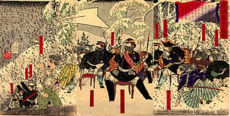
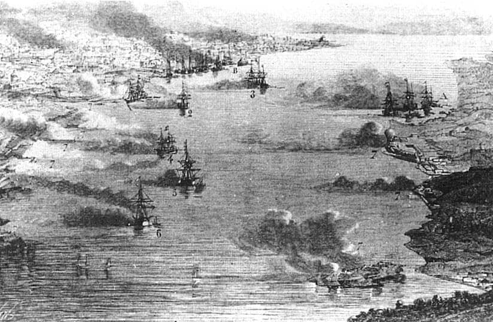
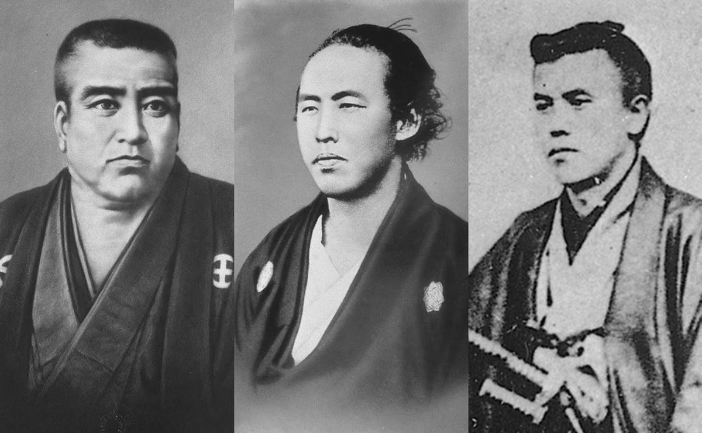
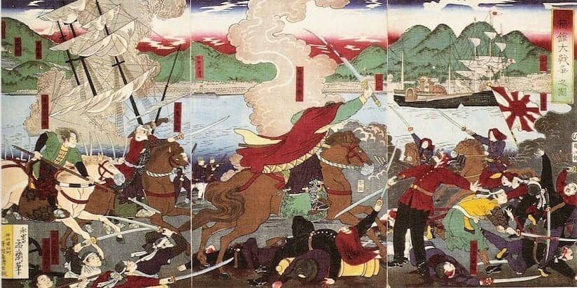

-
寺田屋事件
1862(文久2)年4月23日，京都近郊の伏見の寺田屋で，薩摩藩尊攘派志士が殺害された出来事です。
当時上洛中の島津久光の意図は雄藩連合・公武合体にありましたが，藩士有馬新七らはこれを機に挙兵討幕を企て，関白九条尚忠，京都所司代酒井忠義の殺害を計画して寺田屋に集結しました。
これを知った久光は鎮撫のため，奈良原喜八郎ら9人を派遣したところ，両者は激しい論争ののち乱闘に及び，有馬ら6人は倒れました。
この乱闘は討つ者も討たれる者も同じ薩摩藩士でした。なお，若年の大山巌，三島通庸，西郷従道，篠原国幹など明治の元勲も参加していました。 -
西南戦争
西郷隆盛は，朝鮮問題に対する考え方の違いから中央政府を去り下野しました。彼を慕い多くの若者が帰ってきたので，西郷は彼らを教育するための私学校を作りました。
そのころ，鹿児島では独自の県政が行われ，他県との歩調がそろわなくなっていたので，政府はいろいろな対策をとりました。この政府のやり方に不満をもった私学校生徒は，1877（明治10）年1月末，政府の火薬庫を襲いました。
ここに西南戦争が始まり，戦場は熊本・宮崎へと広がりましたが，政府軍におされて鹿児島の城山に退き，9月24日に西郷らが自刃し，戦いは終わりました。
出典：ウィキペディア
https://ja.wikipedia.org/wiki/%E8%A5%BF%E5%8D%97%E6%88%A6%E4%BA%89 -
薩英戦争
1862（文久2）年に起こった生麦事件で，薩摩藩はイギリスの要求を拒否し，戦争の準備を着々と進めました。イギリス艦隊は，本国からの訓令に基づいて，1863（同3）年7隻が鹿児島に来攻しました。同年7月2日イギリス艦隊は行動を開始，荒天の中で激しい交戦が続きました。イギリス海軍の開発されたばかりのアームストロング砲で，鹿児島城下の砲台や集成館などを攻撃し，ことごとく破壊しました。薩摩藩側も軍備は劣るものの，士気が盛んで訓練も十分であったので，互角に戦いましたが，藩は，この戦争で攘夷の不可能を悟り，藩論を開国へ大きく転回しました。

出典：世界の歴史まっぷ
https://sekainorekisi.com/glossary/%E8%96%A9%E8%8B%B1%E6%88%A6%E4%BA%89/ -
薩長同盟成立
1866（慶応2）年，これまで対立してきた薩摩藩と長州藩の間に成立した和解盟約。土佐の坂本龍馬，中岡慎太郎らの仲介により和解が進みました。
薩摩藩は，前年の第二回長州征伐には出兵を断ったばかりかイギリスからの武器・汽船購入のあっせんを行っています。
薩長同盟は，京都の小松帯刀宅で，長州藩木戸孝允と薩摩藩小松・西郷の間で結ばれ，次第に討幕に向けての連携を強めていくことになります。
出典：日本初の歴史戦国ポータルサイト
https://bushoojapan.com/jphistory/baku/2025/01/20/160113 -
戊辰戦争
1867（慶応3）年12月，王政復古の大号令が発布され，天皇中心の新政府が樹立されました。新政府は小御所会議において慶喜の官位辞退と領地返納を決定しましたが，これに強く反発した旧幕府側は，翌明治元年1月2日，京都へと兵を進め，翌3日，鳥羽口・伏見で薩摩・長州兵と衝突しました。
1万5,000人の兵を誇る旧幕府軍に対して，新政府軍は薩摩3,000人・長州1,500人。しかし戦意・武器で勝る薩長軍は一歩も退かず旧幕府軍を撃退，1月6日，慶喜は江戸へと逃走しました。
出典：世界の歴史まっぷ
https://sekainorekisi.com/japanese_history/%E6%88%8A%E8%BE%B0%E6%88%A6%E4%BA%89/